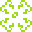
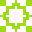
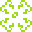
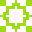
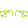
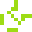
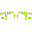
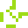
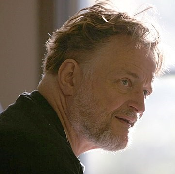
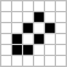

Jocul Vieții este un automat celular conceput de matematicianul britanic John Horton Conway în 1970.
Este un joc fără jucători, în sensul că evoluția sa este determinată de starea sa inițială, nefiind nevoie de nicio intervenție suplimentară.
Interacțiunea cu Jocul Vieții constă în crearea unei configurații inițiale si a observa cum aceasta evolueaza.
Universul Jocului Vieții este o matrice infinita, bidimensională, cu celule pătrate,
fiecare dintre acestea fiind în una dintre cele două stări posibile, vie sau moartă.
Stabilirea starilor celulelor se face conform urmatoarelor reguli:
Apasati click pentru a activa o celula si apasati din nou pe aceasta pentru a o dezactiva. Mai jos, se afla butoanele de unde puteti controla starea programului. In coltul din stanga este scrisa generatia curenta. Pentru a incarca un model, apasa pe unul din butoanele acestea:
 




 





Din aceste butoane controleaza programul:
John Horton Conway a fost un matematician englez, care a adus nenumarate contributii in matematica, mai exact in: teoria grupurilor, teoria numerelor, teoria jocurilor si altele.
Plecand de la regulile enuntate mai sus, in functie de starea initiala a sistemului pot rezultate tipare impresionante. De-alungul timpului aceste pattern-uri au fost studiate si clasificate, de altfel inca in ziua de azi se descopera nenumarate lucruri noi despre Jocul Vietii.

Tiparele se clasifica astfel:
Acesta sunt exemple de modele de vieti pe care le puteti incerca si desena mai sus:



Mai multe informatii puteti gasi aici: